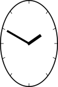

| Main index | Placemat: main guide | About author |


Julian D. A. Wiseman
Contents:
General-purpose routines: Concatenate; ConcatenateToMark; CurrentFontName; CurrentFontSize; GreatestCommonDivisor; IsNumber; ShellSort; PolynomialRoots;
Debug: CountGraphicsStack; ThingToDebugText; OutputLogToPage; Error reporting;
Shapes: Star; ArrowPath; ApproximatingCurve; ArchimedeanSpiralPath; AnalogueClock;
Compound Objects: GlyphPath; GlyphPathMoveto; CharPathRecursive; CharPathRecursiveMoveto; StringHeight; StringMiddleOffset; StringTopOffset; StringWidthRecursive; ShowRecursive; LengthCompoundObject; XcheckRecursive; DeGlyphRecursive;
Paths and Output: PathBBox; SetPaperSize; RepeatClippedWithin; TransformPath.
The author has written a program, in PostScript, to render placemats for glasses at a wine tasting. That program can be found at www.jdawiseman.com/papers/placemat/placemat.ps, and the documentation at www.jdawiseman.com/papers/placemat/placemat.html and www.jdawiseman.com/papers/placemat/placemat-code.html. The code contains several routines that other PostScript programmers might wish to reuse, described here.
However, users are cautioned that this ‘manual’ tends to lag the code.
string1 string2 Concatenate string
Concatenate concatenates the two strings. An older version, available at www.jdawiseman.com/papers/placemat/concatenate.ps, would work with strings or arrays, and did some error handling.
mark thing0 thing1 … ConcatenateToMark string
ConcatenateToMark concatenates the items, converting non-strings to strings using ToString.
- CurrentFontName name
CurrentFontName returns the name of the current font.
- CurrentFontSize num
CurrentFontSize returns the size of the current font, such that CurrentFontName CurrentFontSize selectfont has no effect.
int1 int2 GreatestCommonDivisor int
GreatestCommonDivisor returns the greatest common divisor of the two integers. There is a small speed gain if int1 ≥ int2. If it is not known which is larger, it is not worth testing.
any IsNumber bool
IsNumber returns true if the parameter is an integer or a real, otherwise false.
array code ShellSort -
array code HeapSort -
Until April 2019, the code used HeapSort, which was then replaced with ShellSort. The routines are both in and compared by www.jdawiseman.com/papers/placemat/ShellSort_HeapSort.ps.
The second parameter is code, is a function that takes two items from the stack (two items from the array), and returns a boolean. Both ShellSort and HeapSort sorts the array such that for elements i and i+1 the comparison code returns true. E.g., [2 0 4 3 1] dup {le} ShellSort == outputs [0 1 2 3 4].
ShellSort uses gaps of 1 3 5 8 11 13 17 23 29 37 47 59 71 83 97 113 133 157 181 211 241 277 317 359 409 463 523 587 661 743 829 929 1039 1163 1297 1439 1597 1763 1951 2153 2377 2621 2887 3169 3491 3833 4201 4603 5039 5507 6011 6553 7151 7789 8479 9221 10009 10867 11789 12781 13843 14983 16217 17539 18959 20477 22109 23857 25717 27707 29839 32119 34549 37157 39937 42901 46061 49433 53017 56843 60923 65269 69899 74821 80051 85619 91537 97829 104513 111611 119143 127139 135623 144629 154171 164291 175013 186377 198413 211153 224657 238943 254053 270037 286961 304841 323753 343727 364831 387137 410687 435553 461801 489493 518717 549551 582073 616367 652523 690629 730783 773093 817669 864613 914041 966079 1020853 1078489 1139137 1202939 1270051 1340627 1414837 1492837 1574821 1660979 1751507 1846609 1946501 2051389 2161531 2277157 2398537 2525923 2659571 2799809 2946917 3101207 3263009 3432659 3610531 3796963 3992357 4197131 4411679 4636441 4871869 5118439 5376647 5646997 5930017 6226279 6536351 6860837 7200359 7555571 7927147 8315803 8722271 9147293 9591677 10056247 10541851 11049397 11579803 12134033 12713087 13318013 13949879 14609839 15299041 16018703 16770079 17554507 18373321 19227941 20119843 21050563 22021661 23034793 24091667 25194061 26343817 27542831 28793099 30096679 31455701 32872387 34349041 35888029 37491833 39163039 40904299 42718391 44608169 46576597 48626759 50761853 52985197 55300229 57710489 60219697 62831641 65550319 68379833 71324441 74388551 77576747 80893759 84344501 87934051 91667683 95550839 99589187 103788577 108155057 112694929 117414683 122321047 127420987 132721717 138230711 143955697 149904679 156085927 162508019 169179841 176110549 183309653 190786987 198552703 206617339 214991779 223687273 232715479 242088437 251818607 261918863 272402551 283283443 294575797 306294337 318454303 331071437 344162023 357742907 371831477 386445713 401604211 417326177 433631477 450540619 468074809 486255971 505106731 524650471 544911359 565914359 587685271 610250723 633638249 657876253 682994107 709022113 735991589 763934867 792885323 822877439 853946809 886130191 919465523 953991971 989749973 1026781267 1065128941 1104837467 1145952739 1188522131 1232594533 1278220393 1325451791 1374342439 1424947729 1477324921 1531532987 1587632807 1645687201 1705760941 1767920857 1832235887 1898777159 1967617999 2038834043 2112503321, each being the nearest integer to Exp[Sqrt[2 Log[3] Log[2] + Log[prevGap]^2]]. (Most PostScript implementations have a maximum array size of 65535, so this goes much further than is likely to be useful—the bolded numbers are generally sufficient—but in theory an implentation could allow larger arrays.)
[ c0 c1 … ] LimitLower StrictLower LimitUpper StrictUpper Tolerance PolynomialRoots [ in-range roots ]
Returns real solutions to 0 = ∑i≥0 xi × ci that are between the numbers LimitLower and LimitUpper, strictness of limits being determined by the Booleans StrictLower and StrictUpper. Up to cubics solutions are exact to within PostScript’s single precision. Beyond cubics the x’s will be correct to within ±Tolerance, though will usually be better than that. Roots of odd multiplicity are reported once as single roots (unless x = 0); roots of even multiplicity are reported either once or not at all (again, unless x = 0). For high order polynomials it is not very fast, but is currently called for polynomials of order no greater than an octic.
PolynomialRoots computes multiple roots, and calls PolynomialRoot which finds a single root given a range containing that root. PolynomialRoot uses a new algorithm, seemingly better than Brent’s Method. Assume that the Lower and Upper bounds on x are xL and xU, with the values of the polynomial (or in the more general case of any function) being fL and fU, these having product ≤ 0. Linear interpolation takes the next guess, x′, to be xL + (xU–xL) × fL ÷ (fL–fU). The new method (Wiseman’s Method?) in alternate loops changes this to xL + (xU–xL) × Max[ 0.143, Min[ 0.857, [fL ÷ (fL–fU) ]]. The optimal value for the constant is not known, but some simple experiments suggested that it is not far from one seventh (and one minus this). Broadly, this method does linear interpolation, except when that might be mis-behaving, when the interval size typically diminishes by a factor ≈ 7.
Routines, and one piece of code, that simplify debugging and improve the programming environment.
- CountGraphicsStack int
The code that creates CountGraphicsStack, and initialises it to zero, also redefines gsave (to increment CountGraphicsStack) and grestore (to decrement). Thereafter CountGraphicsStack plays a role analagous to that of countdictstack, checking that gsaves and grestores are balanced. Some help in writing CountGraphicsStack was received here.)
any ThingToDebugText string
ThingToDebugText creates a text representation of any, working well with code, names, numbers, booleans, dictionaries, or arrays of anything which which it works well.
- OutputLogToPage bool
OutputLogToPage is user-created boolean, controlling whether output to the log file is also sent to an extra page at the end of the PDF. Users whose only PostScript interpreter does not produce a log file, such as Mac Preview, should use this. The boolean is tested by code at the end of the PostScript program, code that calls a variety of routines and parameters, including SetPaperSize, and the array OutputLog created early in the program (also copy-paste this creation which also makes OutputToLog). Most functions described in this page call OutputToLog: include this code in your program.
The bulk of the PostScript program lies within a piece of code that is exec’d by a stopped command. If this stopped returns true a block of code then calls OutputToLog with much of the contents of the $error dictionary. This output is far more comprehensive than that output by default in Distiller or GhostScript. Anybody writing a large PostScript program is strongly advised to use this block of code, or something similar.
/Left|/Center|/Right /Top|/Middle|/Bottom num1 /Radius|/Diameter|/Height|/Width num2 int1 int2 DrawLinesInside AntiClockwise Star dict
Star appends a star-shaped path to the currentpath.
A dictionary is left on the stack, it having values for LeftX (of the vertices), CenterX (of the enclosing circle), RightX, BottomY, CenterY (circle), TopY, Radius, InnerRadius, and the boolean AntiClockwise.
In the example on the right the columns have int1 from 5 to 10; and rows have num2 being 2, 3 and 4; DrawLinesInside being false.
An arrow, being a rectangle of tail with a simple triangle of head. Perhaps with heads at both ends. Parameters: X0 Y0 X1 Y1 HeadLength HeadWidth TailWidth Head0 Head1 ArrowPath -, returning nothing. Of these Head0 and Head1 are Booleans (draw an arrow at that end?), and all other parameters are numeric: X0 Y0 is the start of the arrow; X1 Y1 is the end; HeadLength, HeadWidth, and TailWidth size the pieces (if in doubt in the ratio 3:3:1 for tip angle = 2×ArcTan[½] ≈ 53.13°).
It makes the path: any strokeing, filling, or clipping are the responsibility of the calling code.
Assume existences of arbitrary functions X[t] and Y[t], both differentiable at least twice. It is wanted to make a single Bézier curve approximating this for tstart ≤ t ≤ tend. Obviously the Bézier curve starts at (X[tstart],Y[tstart]) and ends at (X[tend],Y[tend]), but what are the middle control points? Answered by Xs Ys Xe Ye dXs dYs dXe dYe ddXs ddYs ddXe ddYe ApproximatingCurve X1 Y1 X2 Y2, where ‘d’ is a derivative wrt t, and ‘s’|‘e’ are the values at the start|end.
Makes a path of an Archimedean spiral, in pieces ≤60°, by invoking ApproximatingCurve. Parameters: NumArms AngOffset CentreX CentreY RadiusMax RadiusBetweenArms Clockwise ArchimedeanSpiralPath -, in which NumArms is integer, Clockwise is Boolean, and the others are real. If AngOffset is zero then one arm emerges vertically fromt he centre, and this is a sensible default.

/Left|/Center|/Right /Top|/Middle|/Bottom num1 num2 num3 num4 true AnalogueClock -
/Left|/Center|/Right /Top|/Middle|/Bottom num1 num2 false AnalogueClock -
AnalogueClock’s first two parameters, both names, have the same role as in Star; num1 is the width, num2 is the height. If the last parameter, the boolean, is true, then num3 is the hours (0 ≤ num3 ≤ 12), and num4 the minutes (0 ≤ num4 ≤ 60). If the last parameter is false no hands are shown.
In May 2011 this was removed from the main code, but can still be found at www.jdawiseman.com/papers/placemat/analogueclock.ps.
In many places the PostScript program accepts parameters in the form of a “compound object”. A compound object is any of the following.
There are a number of routines handling compound objects described below.
Note that the wide freedom allowed to code in a compound object causes some problems.
A bug in at least one version of Distiller (Professional 8.1.0 (10/23/06) on Mac OSX) causes paths made partly from charpath and partly from linetos and curvetos to be stroked incompletely (see thread).
It seems natural to surround the size-measurement routines with a gsave nulldevice … grestore. But, alas, nulldevice seems to cause the current path to be stored with integer coordinates, thus causing PathBBox (and indeed pathbbox) to return slightly incorrect values (thread).
glyphname bool GlyphPath -
GlyphPath computes the path of a glyph, with the charpath-style boolean flag, destroying the currentpoint. Its design was based on suggestions made in this thread.
glyphname bool GlyphPathMoveto -
GlyphPathMoveto computes the path of a glyph, with the charpath-style boolean flag, moving the currentpoint as if after a show.
CompoundObject bool CharPathRecursive -
CharPathRecursive computes the path of a compound object, with the charpath-style boolean flag, destroying the currentpoint. This, and several other functions taking a CompoundObject, must work around two different bugs in distiller; one about forming paths with both charpath and lineto; the other about path construction differing after a call of nulldevice. CharPathRecursive calls GlyphPath, CharPathRec, CharPathRecMoveto and XcheckRecursive.
CompoundObject bool CharPathRecursiveMoveto -
CharPathRecursiveMoveto computes the path of a compound object, with the charpath-style boolean flag, moving the currentpoint as if after a show. Other than not destroying the currentpoint, CharPathRecursiveMoveto closely resembles CharPathRecursive. CharPathRecursiveMoveto calls GlyphPathMoveto, CharPathRecMoveto and XcheckRecursive.
CompoundObject StringHeight num
StringHeight computes the height of its parameter, that is, the difference between the top and bottom of its bounding box. Calls PathBBox.
CompoundObject StringMiddleOffset num
StringMiddleOffset computes the offset to the baseline required to centre the parameter vertically. Calls PathBBox.
CompoundObject StringTopOffset num
StringTopOffset computes the offset to the baseline required to align the top of the parameter vertically against the y value of the currentpoint. Calls PathBBox.
CompoundObject StringWidthRecursive num
StringWidthRecursive computes the width of the compound object. Unlike the operator stringwidth, it does not compute a vertical offset, as compound objects are always shown horizontally. Other than this no-y computation, StringWidthRecursive and stringwidth are analagous. Calls StringWidthRec.
CompoundObject ShowRecursive -
ShowRecursive is the compound-object version of show. The compound object is shown starting at the currentpoint, and in the current font, though either of these might be changed by code within the compound object.
CompoundObject LengthCompoundObject -
LengthCompoundObject computes the width of the parameter in characters, and is hence meant to be analagous to length. Before any code execution, EffectiveNumCharacters is set to zero. After the code execution EffectiveNumCharacters is added to the length. Hence code rendering a glyph or sequence of glyphs can set EffectiveNumCharacters to be the effective number of ‘characters’, whatever that might be wanted to mean.
CompoundObject XcheckRecursive bool
XcheckRecursive returns true if the parameter contains any code, however deeply within nested arrays, otherwise false.
CompoundObject DeGlyphRecursive string
DeGlyphRecursive approximates a compound object with a string. PDF pages can be named, but the name is passed to pdfmark as a string. But page names might contain, for example, accents. DeGlyphRecursive strips accents, and approximates other glyphs.
- PathBBox llx lly urx ury
PathBBox is what the lower-case operator pathbbox should have been. From PLRM3 on pathbbox: “If the user coordinate system is rotated (other than by a multiple of 90 degrees) or skewed, the bounding box returned may be larger than expected.” This is not so for PathBBox which, further, does not need a preceding flattenpath. PathBBox works using pathforall, and for curve pieces solves the quadratic to compute precise turning points.
If the current path contains any line or curves, isolated moves are ignored. If the current path contains only isolated moves, the returned box includes all the moves. If the current path contains nothing, PathBBox invokes emptycurrentpath, which, if not defined by calling code, will cause distillation to terminate with an error.
PathBBox is about a hundred times slower than flattenpath pathbbox, and was discussed in this thread.
bool1 bool2 bool3 bool4 name1 name2 SetPaperSize -
The parameter name1 should be one of /A0 though to /A9, or /USL (for 8½″×11″ US Letter), /USL2 (for 11″×17″ US Ledger), /USLegal (for 8½″×14″ US Legal), or /A4_USL (the width of A4, the 11″ height of US Letter). The parameter name2 should be one of /Landscape or /Portrait. If bool1 then crop marks might be painted, these being controlled by the likes of OuterGlassesMarginL. If bool2 then the page is rotated 180°. If bool3 then the page is mirrored. If bool4 then setpagedevice is called. Thus SetPaperSize sets the paper size. Calls Dimensions; assumes existence of some margin parameters.
numx numy CompoundObject numSpaces numLineStep numAngle int code1 code2 RepeatClippedWithin -
RepeatClippedWithin paints repeated copies of a compound object within a path. On calling RepeatClippedWithin there is a current font. The current path is used as the clipping path, and remains the current path on exit. The CompoundObject is the object shown repeatedly. Horizontally, these are separated by numSpaces space widths. Lines are numLineStep apart. The compound object is shown at angle numAngle. The int parameter is the number of outlines shown. The innermost colour, that is the fill colour of the compound object, is set by code1, and the other by code2. The numx and numy values determine a ‘starting point’ for the filling. In the example on the right RepeatClippedWithin has been called twice: the fills line up because the numx and numy values were the same. (Help on insideness testing was received here.)
{TransformFunction} num TransformPath -
TransformPath replaces the current path with a transformed version. The parameter TransformFunction does most of the work, it taking four parameters x, y, dx, dy (the last two being a vector, or a direction pointing away from x,y), and converts them to x', y', dx', dy'. Thus the first parameter converts a position, and a direction from that position, to a new position and a new direction. The second parameter, a number, is a distance in the transformed space that can be deemed small (with 0.12, or one pixel at 600dpi, being sensible). If TransformPath appears not to work, a likely cause is a failure by the calling routine to pass code that correctly computes dx', dy'. Calls TransformMoveto, TransformLinetoClosepath, TransformLineto, TransformClosepath and TransformCurveto.
In May 2011 this was removed from the main code, but can still be found at www.jdawiseman.com/papers/placemat/transformpath.ps.
Julian D. A. Wiseman
| Main index | Top | About author |